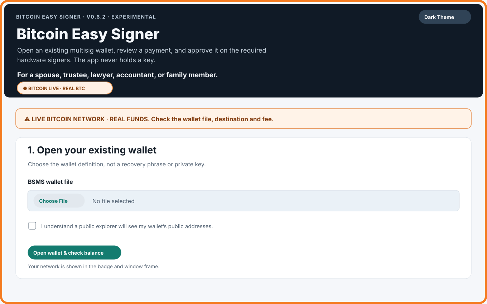
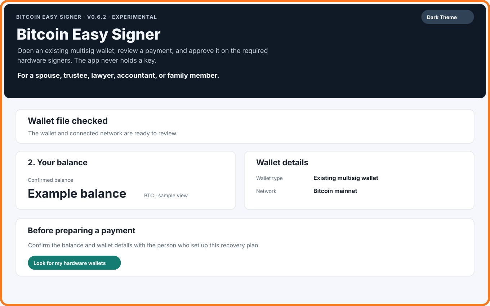
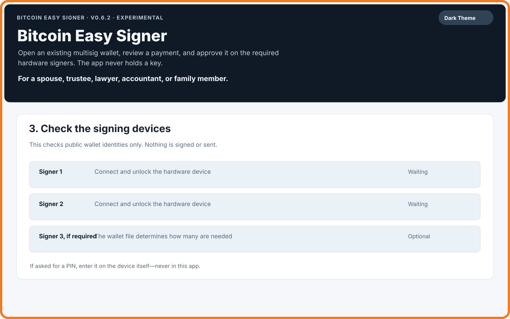
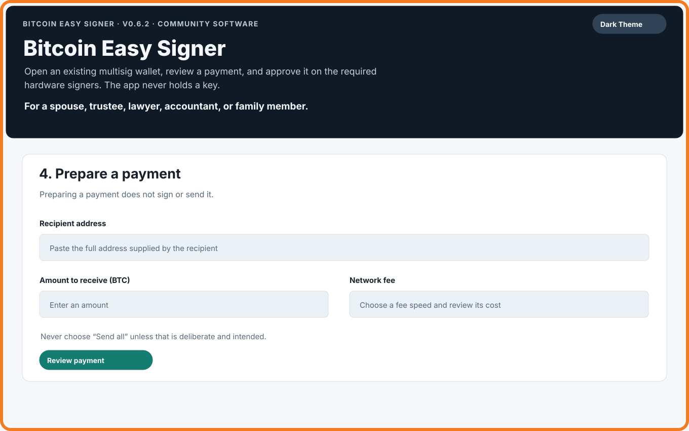
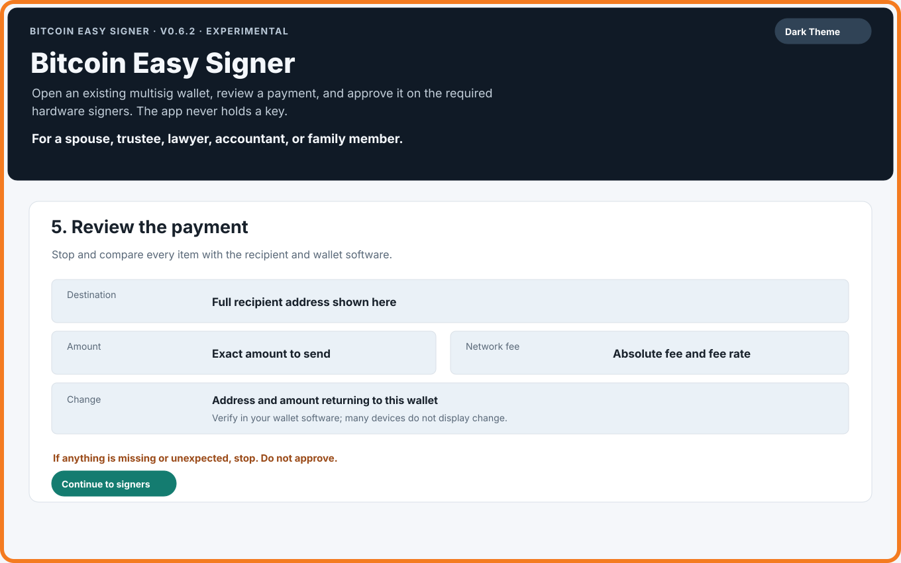
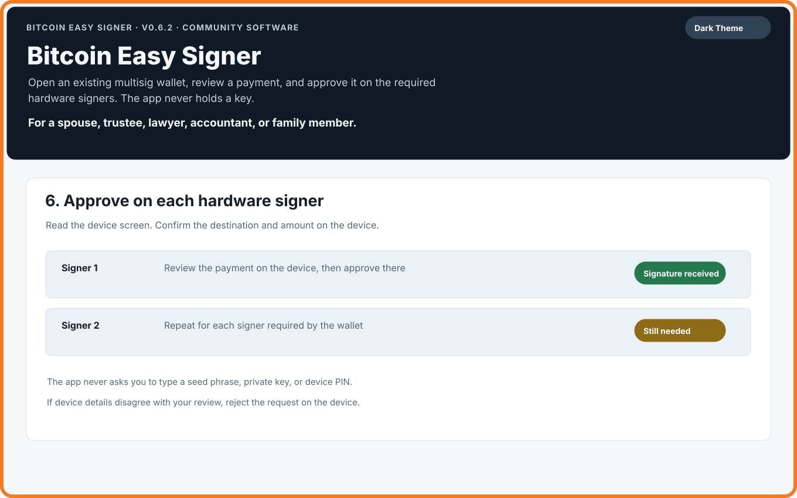
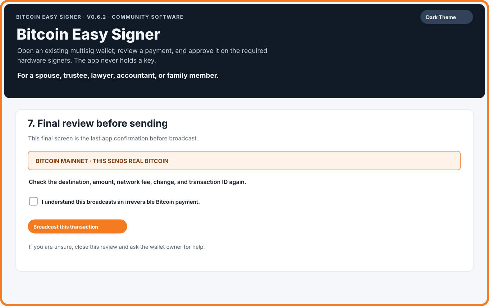
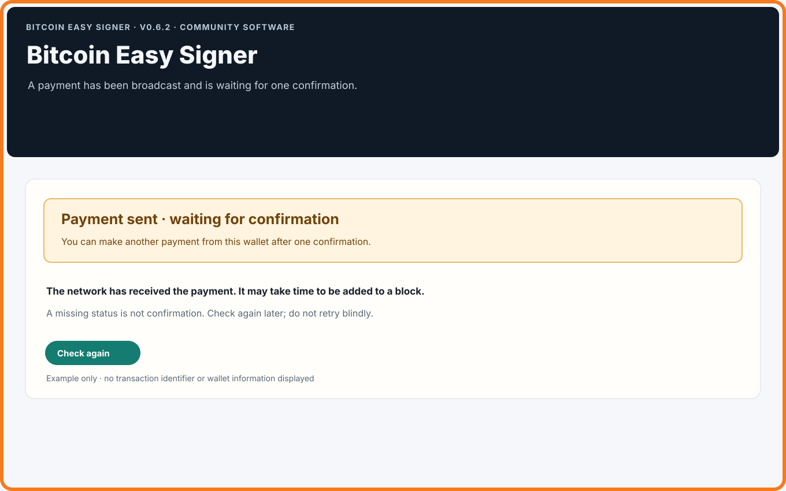
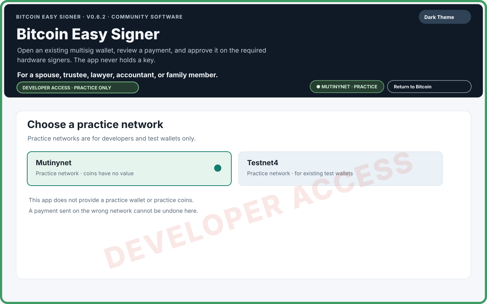

Version 0.6.4 · A guide for the person helping
A plain guide to helping with a multisig wallet.
For a spouse, family member, trustee, lawyer, or accountant who has been asked to help with an existing Bitcoin wallet. You do not need to know the technical details to follow the steps. You do need to stop when something does not agree.
Read this first. Bitcoin Easy Signer is free, open-source software maintained and distributed by Bitseeker LLC. Anyone may inspect, test, audit, and validate its source; this does not mean a release has received an independent security audit. It is provided “as is,” without warranty or guarantee to the fullest extent allowed by law. You are responsible for deciding whether to use it and for independently checking the wallet, network, destination, amount, fee, and change. Bitcoin payments may be irreversible. Read the full safety notice before use.
What the app does
Bitcoin Easy Signer is maintained by Bitseeker LLC to help a trusted person make a payment from an existing multisig wallet. The wallet owner provides one BSMS wallet-definition file and the hardware signers required by that wallet. The app checks the wallet, helps prepare a payment, asks hardware signers to approve it, and requires a final review before sending.
This app is not a wallet and never holds a wallet key. It does not create a wallet or recover seed words. With multisig, more than one key protects the wallet; the wallet owner sets how many approvals are needed. A signer is a hardware device holding one of those keys.
Before you begin
- The single BSMS wallet-definition file from the wallet owner. Do not substitute seed words, a private key, or a wallet database.
- The compatible hardware signers required by the wallet, used by the person authorized to unlock them.
- The recipient's full Bitcoin address and expected amount. Verify the address with the recipient through a separate trusted channel.
- An internet connection and enough time for wallet scanning and device checks.
- A network fee you are willing to pay, and the wallet owner's instructions for checking change in the wallet software.
Keep the wallet file private. It contains public wallet information that can reveal addresses and activity. Do not post it or send it to an online assistant.
Never enter a seed phrase, private key, or PIN here
Never type seed words, a private key, or a hardware-device PIN into this app, a website, or a chat. If a device asks for its PIN, enter it on the device itself. Stop if a screen asks for seed words or a private key on the computer.
1. Open the existing wallet
The app opens on Bitcoin mainnet, the live network where real Bitcoin exists. The orange frame, Bitcoin Live badge, and warning identify it. Choose the BSMS file supplied by the owner. The app asks you to acknowledge that public explorers will see wallet addresses; mainnet payments also compare selected public transaction IDs with a second explorer.

After scanning, compare the summary with the wallet owner's expectation. The scan checks a limited address range; it is not a complete sweep of every address the wallet may ever have used. Stop if funds are missing or the balance looks wrong.

2. Check the hardware signers
Looking for signers checks public wallet identities only; it does not sign or send. Connect the expected devices and unlock them using their normal on-device process. A device can take several minutes to respond, so wait for the progress message.

If a device is missing, check its cable, unlock it, open its Bitcoin app if required, and close other wallet programs that may be using it. Do not automatically retry a signing request after a timeout. Stop and ask the wallet owner if the required device remains unavailable.
3. Prepare a payment
Enter the full recipient address and the amount the recipient expects. Choose a fee speed and read the fee estimate. At this stage nothing is signed or sent. Do not select Send all unless the owner specifically intends to spend every confirmed coin found by this scan. If a change-layout warning blocks a partial payment, stop rather than guessing about wallet paths.

4. Review every detail
Compare the network, full destination address, amount, fee, and change with the recipient's instructions and the wallet software. Change is the part returned to the wallet after the payment and fee.
Hardware devices may not display change. Check the change address in the wallet software that holds the wallet file. If any detail is missing or unexpected, stop and do not sign.

5. Approve on each hardware device
The device screen is where you approve. Read it carefully and verify the destination and amount on each device before approving. The wallet policy decides how many signatures are needed. If a device shows different details, reject the request and stop.

6. Final review and broadcast
After signing, compare the network, destination, amount, change, fee, and transaction ID again. The mainnet final screen says that it sends real Bitcoin and cannot be undone. Its checkbox is the operator's confirmation for this payment. Leave it unchecked unless every detail has been independently checked and you are authorized to send.

7. Wait for confirmation
After broadcast, the app reports that the payment is waiting for one confirmation. This may take time. A missing status or a browser link is not confirmation. Use Check again later, and do not make another payment from that wallet until the app reports one confirmation.

If a broadcast appears to hang or its result is unknown, do not retry blindly. Ask the wallet owner to check the transaction ID. There is no in-app fee replacement; a compatible external wallet may support replacing a delayed transaction, which is a separate decision.
If something goes wrong
- Balance is unexpected: stop. The scan is bounded; compare with the owner's wallet software.
- Signer is missing: check cable, unlock state, Bitcoin app, and whether another program has the device. Wait for the app's message.
- Developer Mode opened by mistake: do not load a wallet or prepare a payment. Choose Return to Bitcoin and verify the orange frame and Bitcoin badge. The app reopens on mainnet.
- Payment no longer wanted: do not sign or broadcast. Clear or close the review, then ask the owner before starting again.
- Broadcast result unclear: do not resubmit from guesswork. Ask the wallet owner to check the transaction ID with a trusted source.
- Payment not confirmed: wait and check again. A missing status is not confirmation.
- Wrong address or network after broadcast: contact the recipient or owner immediately. The app cannot reverse or recover the payment.
Developer Mode: For practice networks and testing
If you do not know why you would use Developer Mode, do not use it.
Developer Mode is a test bench for people who already have a practice wallet and practice coins. After confirmation it offers Mutinynet or Testnet4; the app provides neither wallet files nor coins. A practice payment does not prove how a specific hardware device will handle change on a later live payment.

Limits and honest expectations
- The app supports existing native-SegWit multisig wallets with two or three keys. It does not create wallets or keys.
- A bounded scan may miss funds outside its address range. Public explorers are observations, not a complete wallet history or a trusted node's consensus view.
- An unstated BSMS change path is not proof of a wallet's historical layout. The app applies its standard-derived fallback only to a native-SegWit sorted 2-of-3 wallet when all three signer account origins match the standard four-level BIP48 pattern and the first receive address matches that pattern. A bare /* alone does not qualify. The app makes this check automatically; you should not try to decide the path yourself. Other layouts need a change path declared in the file for a partial payment, or a deliberate Send All choice. Some BSMS exporters can lose custom branch layouts.
- Hardware signers may not show change. Check it in wallet software. Practice-network use does not establish what device firmware will display on mainnet.
- A single confirmed mainnet payment is only one data point; it does not establish how a later payment will behave.
Bitcoin Easy Signer is free, open-source community software maintained by Bitseeker LLC. It is provided “as is,” without warranty or guarantee to the fullest extent allowed by law. Use it at your own risk and independently verify every payment. This guide is general information, not legal, financial, or estate-planning advice. Z.ai's public v0.6.3 audit assigned Yellow because publication bypassed automated workflow gates; v0.6.4 has since been published through those gates, and independent follow-up review is pending.
Small glossary
- Address
- Where a Bitcoin payment is sent.
- BSMS
- A text file describing an existing multisig wallet.
- Change
- The part returned to your wallet after a payment and fee.
- Fee
- The amount paid to the Bitcoin network to process a transaction.
- Mainnet
- The live Bitcoin network, where transactions use real Bitcoin.
- Multisig
- A wallet that requires approvals from more than one key.
- PSBT
- A proposed-payment file for hardware signers to review and sign; preparing it does not send Bitcoin.
- Signer
- A hardware device holding one of the wallet's keys.
- Testnet4 / Mutinynet
- Practice networks with coins that are not real Bitcoin.